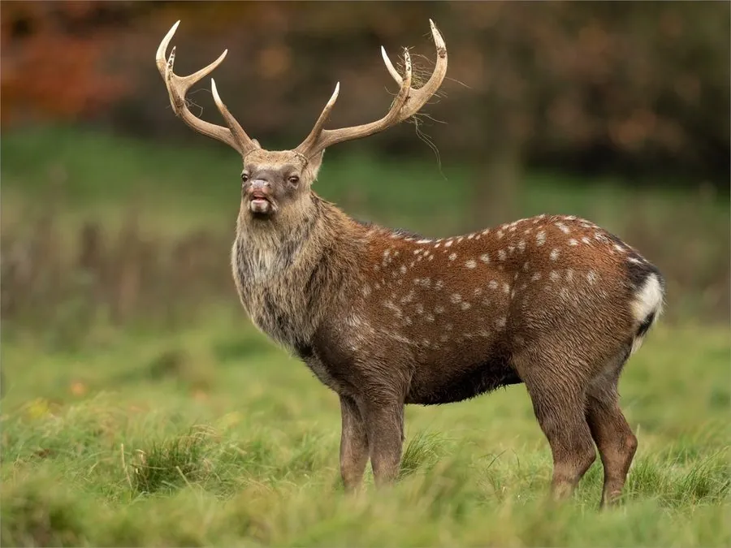

哺乳动物 · 动物界
梅花鹿 Cervus nippon

东亚温带森林中的中型鹿类，夏毛红棕布满白斑，雄鹿每年脱角重长，野生种群因栖息地丧失而稀少。
- 分类
- 门脊索动物门纲哺乳纲目偶蹄目科鹿科属鹿属
- 栖息环境
- 温带针阔混交林、林缘草地与灌丛
- 地理分布
- 中国、日本、朝鲜半岛及俄罗斯远东，中国野生种群见于东北、华中、华南的局部山区
- 保护级别
- IUCN 无危（LC）；中国国家一级保护动物
物种志
梅花鹿体长 0.95–1.7 米，肩高 0.7–1.0 米，雄性体重 50–110 kg，雌性 30–60 kg。夏季被毛为红棕色，脊背两侧各有一排白色斑点，形似梅花；冬季毛色转为灰褐色，白斑变淡。雄鹿长有 3–4 叉的角，角基有绒毛，每年脱落后重新生长。
梅花鹿栖息于温带针阔混交林、林缘草地和灌丛，主食嫩草、树叶、灌木枝叶和果实，多在晨昏活动。它们结成雌鹿与幼鹿组成的群体，雄鹿夏季独居或成小群，秋季发情时用鸣叫和角斗争夺配偶。雌鹿妊娠期约 7.5 个月，每胎 1 仔，幼鹿出生时身上带白色斑点。梅花鹿分布于中国、日本、朝鲜半岛和俄罗斯远东，中国境内野生种群主要见于吉林、黑龙江、江西等地，历史上因鹿茸贸易被大量捕猎，野生华南亚种一度濒临消失。
形态与习性
- 食性嫩草、树叶、灌木枝叶与果实
- 体长0.95–1.7 m，肩高 0.7–1.0 m
- 体重雄性 50–110 kg，雌性 30–60 kg
- 寿命野外约 12–15 年
- 繁殖秋季发情，妊娠期约 7.5 个月，每胎 1 仔
- 鹿角雄鹿角有 3–4 叉，每年脱落重长
- 毛色夏毛红棕带白斑，冬毛灰褐斑点变淡
趣味知识
- 梅花鹿夏季毛色红棕、白斑清晰，冬季则转为灰褐色。
- 雄鹿的角每年脱落重长，生长期覆盖一层柔软的鹿茸。
- 幼鹿出生时身上就带白色斑点，是天然的伪装。
- 中国野生梅花鹿因历史上的鹿茸贸易一度濒临消失。